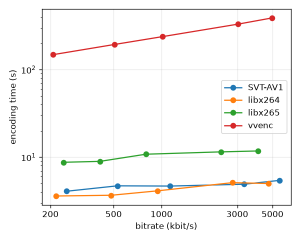
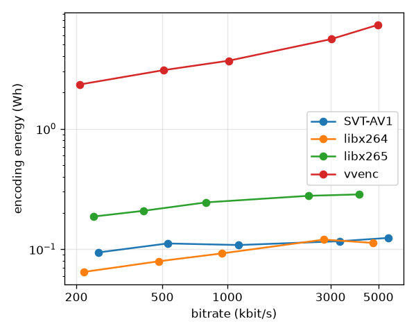
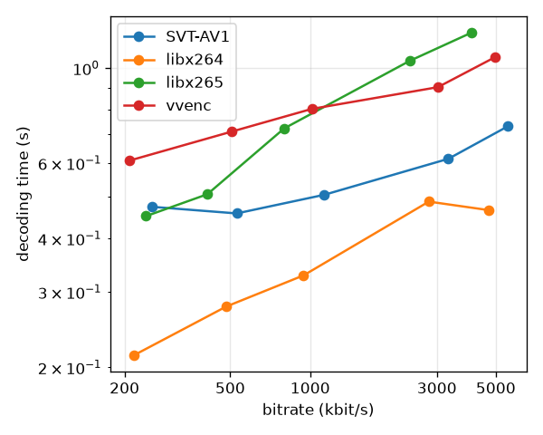
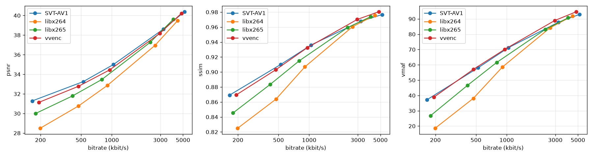
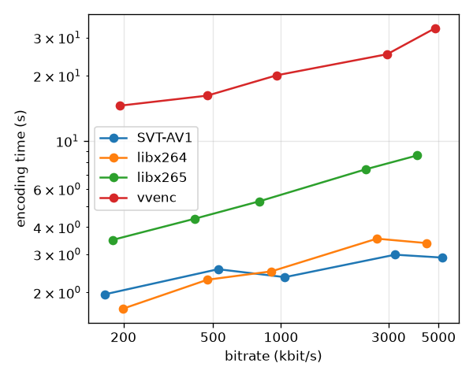
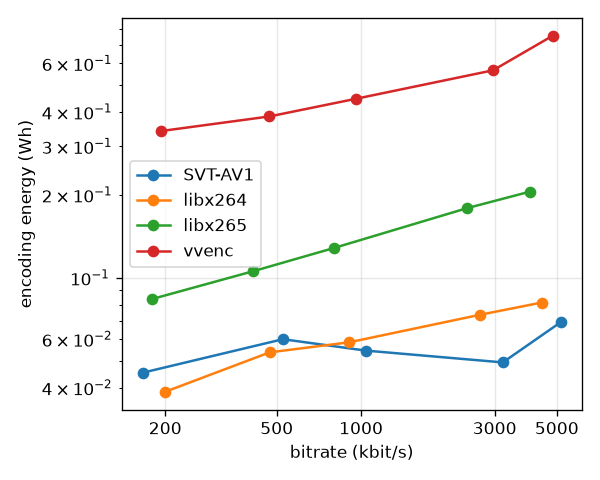
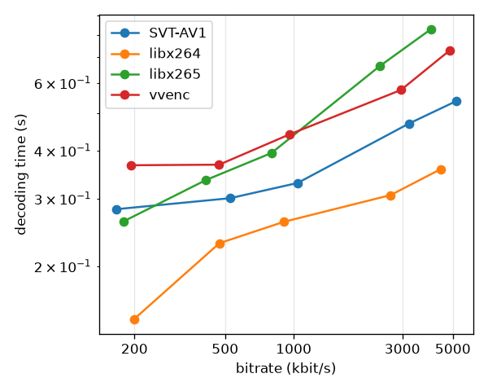
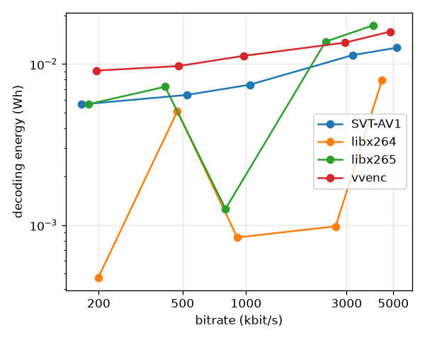
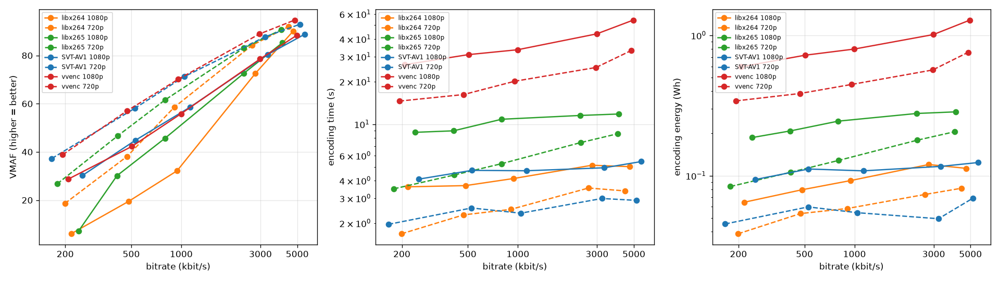

← DASH player · data: 1080p results (csv) · 720p results (csv) · what we did
5 s clip of input.mp4 (30 fps), once at 1080p and once scaled down to 720p, encoded at
200k, 500k, 1M, 3M and 5M with libx264, libx265, SVT-AV1 and vvenc (VVC, preset faster).
Time and energy were measured with CodeCarbon (energy on a Mac is only an estimate).
Jump to: 1080p · 720p · 1080p vs 720p
| HLS | DASH | |
|---|---|---|
| Manifest | .m3u8 (text playlist) | .mpd (XML) |
| Segments | .ts / fMP4 | .m4s (fMP4) + init.mp4 |
| Standard | Apple, proprietary | ISO/MPEG, open |
| Browser support | Native on Safari/iOS, else hls.js | Needs dash.js (not on iOS) |
| Codecs | Mostly H.264/HEVC | Any codec |










Solid line = 1080p, dashed line = 720p. Left to right: quality (VMAF), encoding time, encoding energy.
